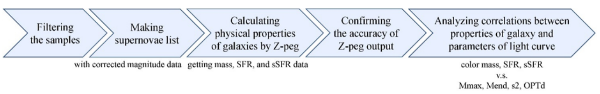

The Relationship Between Core-collapse Supernova Light Curves and Their Host Galaxies
許思嫺
Abstract
This work aims to connect the characteristics of progenitor stars of core-collapse supernovae (CCSNe) and light-curve properties by studying their host galaxies. This study collects host-galaxy photometric data from SDSS and determine the host-galaxy parameters with Z-peg. We find some significant trends between CCSN light curves and their host-galaxy parameters such as color and stellar mass. Our results are consistent with some theoretical predictions that the photometric properties of CCSNe are related to their original progenitor stars.
Research Purpose
Given that the stars in a galaxy tend to have (on average) similar characteristics, this study aims to understand the properties of type II-P and II-L SN light curves by measuring the host-galaxy parameters, such as color, stellar mass, star-formation rate (SFR), and specific SFR (sSFR). Given that the stars in a galaxy tend to have (on average) similar characteristics, this study aims to understand the properties of type II-P and II-L SN light curves by measuring the host-galaxy parameters, such as color, stellar mass, star-formation rate (SFR), and specific SFR (sSFR).
Methodology

Analyzing methods:
- Scatter diagram
- Correlation coefficient
- Pearson correlation
- Kendall’s rank correlation
- Spearman rank correlation
- Mean
- Bin average
Conclusions and Future Work
- Significant correlations
- The bluer the host galaxy, the brighter the SN peak luminosity (Mmax).
- The bluer the host galaxy, the steeper the SN light-curve slope (s2).
- The more massive the host galaxy, the brighter the SN peak luminosity (Mmax).
- Possible correlations but not significant in statistics:
The higher the host-galaxy sSFR, the brighter the SN peak luminosity (Mmax). - Most of our results are consistent with the theoretical predictions, suggesting that host galaxy is an important tool to understand the progenitors of CCSNe. More observational data and analysis in the future are needed to put a stronger constraint on their explosion physics.